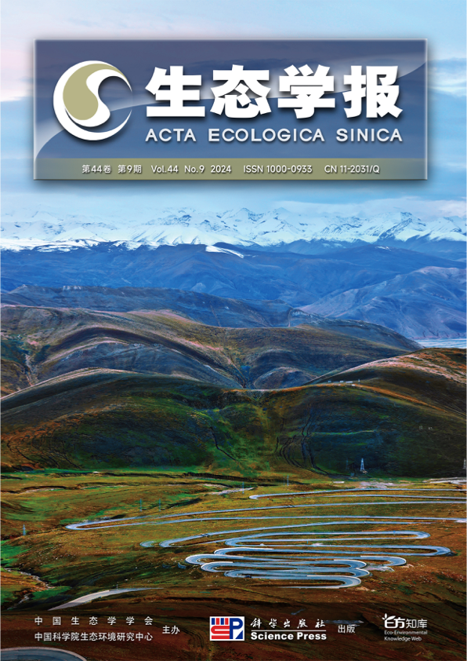
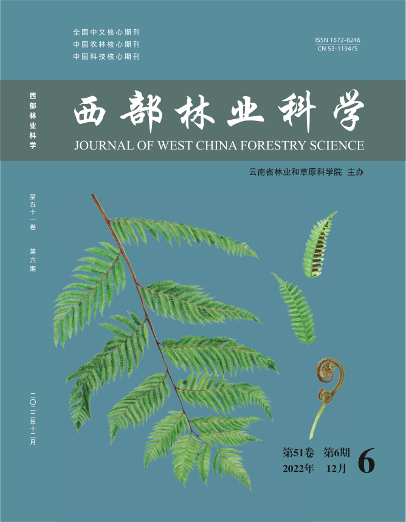
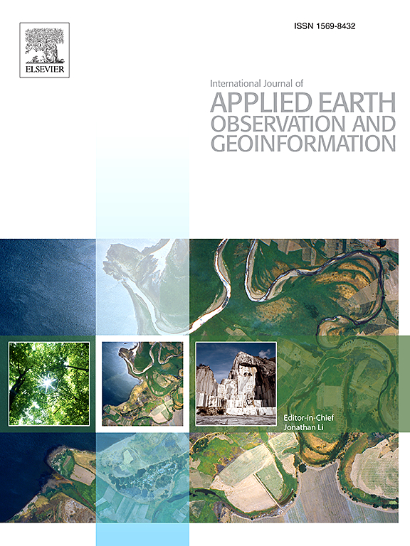

/ Academic
Hey there! This is a personal public webpage that is continually being improved. I am Liu Haiyang from Henan Province, China, and you can call me Ocean!
Done is better than Perfect!
Done is better than Perfect!
Research interests
- Landscape Ecology
- Ecosystem Assessment
- Remote sensing
- Spatial Theory and Methods
Education background & work experience

B.S.
2015/09-2019/06
Shanxi University, Taiyuan / School of Environment and Resources / Physical Geography and Resource Environment

M.S.
2020/09-2023/06
University of Chinese Academy of Sciences, Beijing, Chengdu / Chengdu Institute of Biology / Biology and Medicine (Landscape Ecology and Restoration Ecology)
Project: Vegetation Landscape Restoration Dynamics and Ecological Effects in the Dagou Basin, Maoxian County, Sichuan Province.
Supervisor: Bao Weikai
RA
2024/07-2025/03
Research Assistant of The Hong Kong Polytechnic University, Shenzhen / Shenzhen Research Institute.
Curtin University Geospatial Intelligence Lab member.
Projects:
- Degree of Spatial Interpretability (DSI).
- Degree of geocomplexity for spatial validation (DG).
- Local effects of pattern interaction.
- Generalized spatial error for validation (GSE).
Supervisor: Song Yongze
Ph.D.
2025/04-2028/04
Hokkaido University, Sapporo, Nayoro / Graduate School of Environmental Science / Forest Field Science.
Projects: Development of Optimal Ecosystem Management Methods Following the Flowering of Dwarf Bamboo in Hokkaido.
Supervisor: Satoshi Suzuki
Publications
-
First authorLiu H Y, Tang Y Y, Wang H J, Bao W K. Forty-two-year dynamics of vegetation landscape restoration pattern and its characteristics in Dagou basin, Maoxian County, Sichuan Province. Acta Ecologica Sinica, 2024, 44(9): 3708-3720.
-

Liu H Y, Bao W K. Dynamics of Vegetation Landscape Restoration and Its Ecological Effects [J]. Journal of West China Forestry Science, 2022, 51 (06): 140-145.
-
Co-authorSun, Y., Wu, G., Song, Y., Liu, H., Wang, L., Zhang, Z., Hu, J., 2026. Local effects of pattern interactions in driving urbanization. International Journal of Applied Earth Observation and Geoinformation 146, 105072. https://doi.org/10.1016/j.jag.2025.105072.
Academic conference
- Effects of Sasa mass-flowering and dieback on forest tree regeneration: Preliminary results from a seedling survey (2024-2025) in the Nakagawa Experimental Forest. Poster presented at the JaLTER Open Science Meeting 2025 (JaLTER-OSM), Nakagawa, Hokkaido, Japan, October 7-8, 2025. /poster/
Research experience
09/2016-09/2018
Project: Exploration of Forest Fire Monitoring Methods Based on MODIS and ETM+ Remote Sensing Data.
Main research content: Calculation of NDVI (Normalized Difference Vegetation Index) and NBR (Normalized Burn Ratio); construct fire point index through brightness temperature.
Responsibilities: This is a scientific research training project. I completed the project as the captain of a three-member research team, mainly responsible for data processing and article writing. In the end, the project won the sixth place in the college's research training competition.
09/2020-12/2021
Project: (1) Research on the spatial pattern and genesis of alpine pines. (2) Second Tibetan Plateau Scientific Expedition Program.
Responsibilities: I participated as an assistant in the field data survey for both projects. I was mainly responsible for vegetation surveys (surveying plant species, biomass and other basic information) and soil sampling and processing.
Technical Skills
- GIS: ENVI / ArcGIS / QGIS / GEE / GeoDa
- Data Analysis: SPSS
- Ecology: Fragstats
- Code: R
Professional Service
Peer Reviewer:
- International Journal of Applied Earth Observation and Geoinformation (Q1)
- All Earth (Q2)
- GIScience & Remote Sensing (Q2)
Membership:
- Geospatial Intelligence Lab, Curtin University (2024 - Present).
Awards & Certificates
- Hokkaido University EXEX Doctoral Fellowship (2025-2028)
- Full Tuition Waiver (PhD, First Semester, 2025)
- JASSO Scholarship for Privately-Financed International Students (2025.5-2026.5)
- Outstanding Communist Party Member, Chengdu Institute of Biology, Chinese Academy of Sciences (2023)
- Outstanding Student Award, Chengdu Institute of Biology, Chinese Academy of Sciences (2023)
- Excellence Award in the National University of Science and Technology Translation Contest (2022)
- Outstanding Youth League Member, School of Environment and Resources, Shanxi University (2017-2018)
- Scholarship for the Second Year of Studies, School of Environment and Resources, Shanxi University (2017)
- Driver's License (Chinese C1)
Language
- Chinese (Native language)
- English (Fluent)
- Japanese (Beginner)